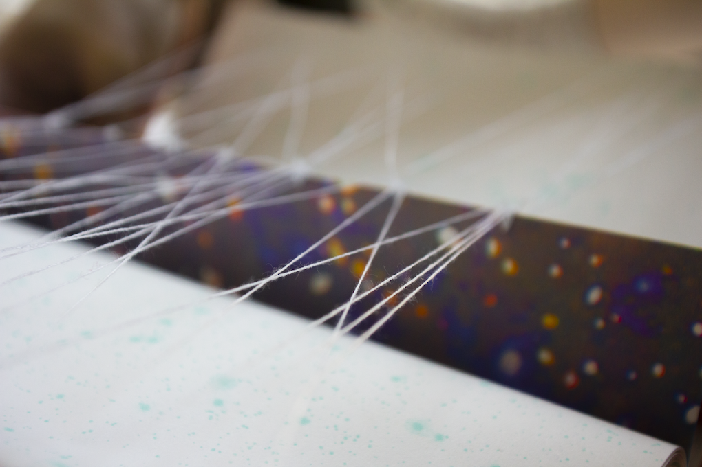
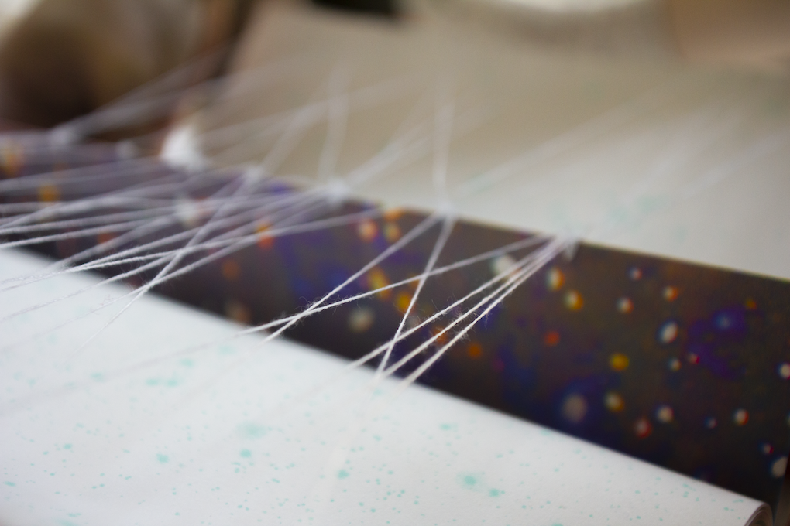

there is no incognito tab. a collection of visual poems that delves into my data exhaust created by a diverse array of systems and algorithms. I created this book to understand what gets stripped away by different surveillance states and speculate on a series of exercises to undo the scattering and rehumanize the practice of datafication. This project embodies my struggle to understand and reconcile with the surveillance economy and where in that world I stand as a person.
This thesis project was submitted in partial fulfillment of the requirements for the degree of Master of Fine Arts in Design and Technology at Parsons School of Design. You can view the project here and read the research here on the Class of 2021 thesis project and publication websites.
 

Faculty Advisors: Richard The, Anna Harsanyi, John Sharp, and Barbara Morris